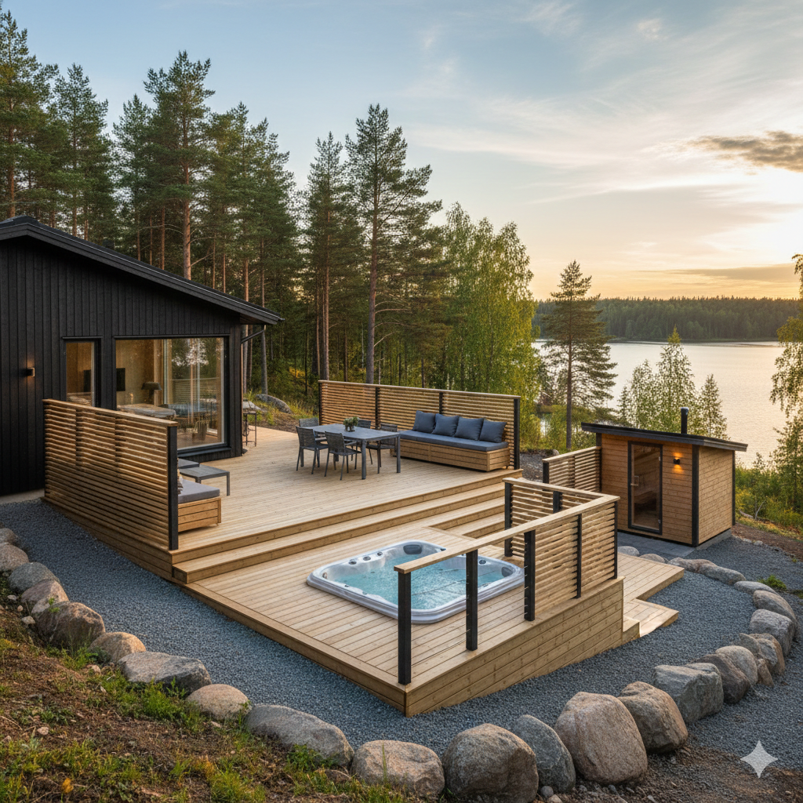
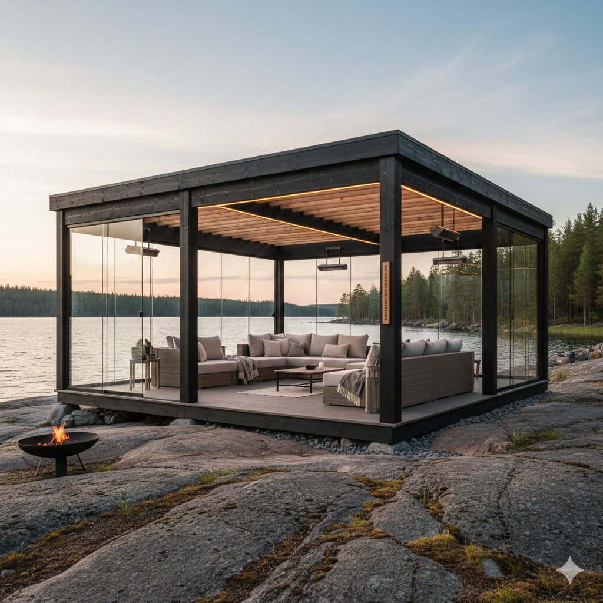
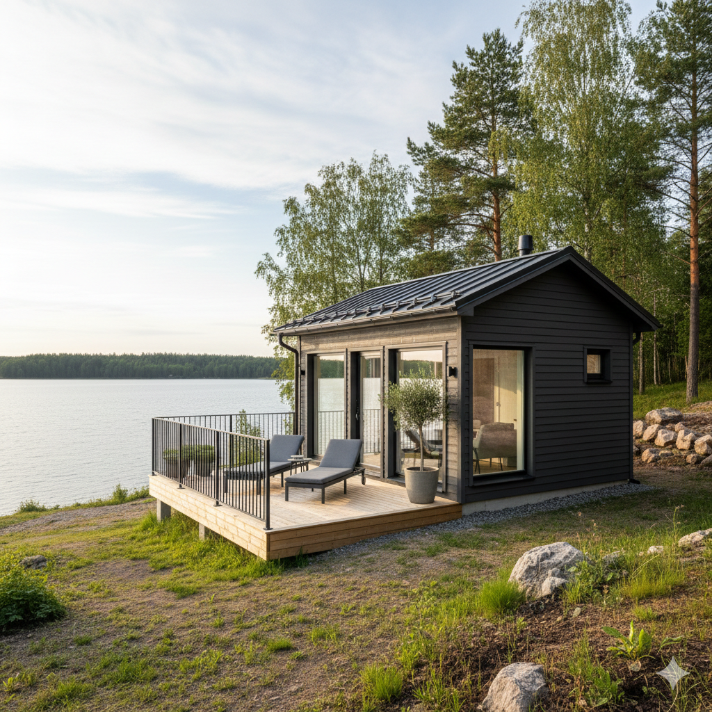
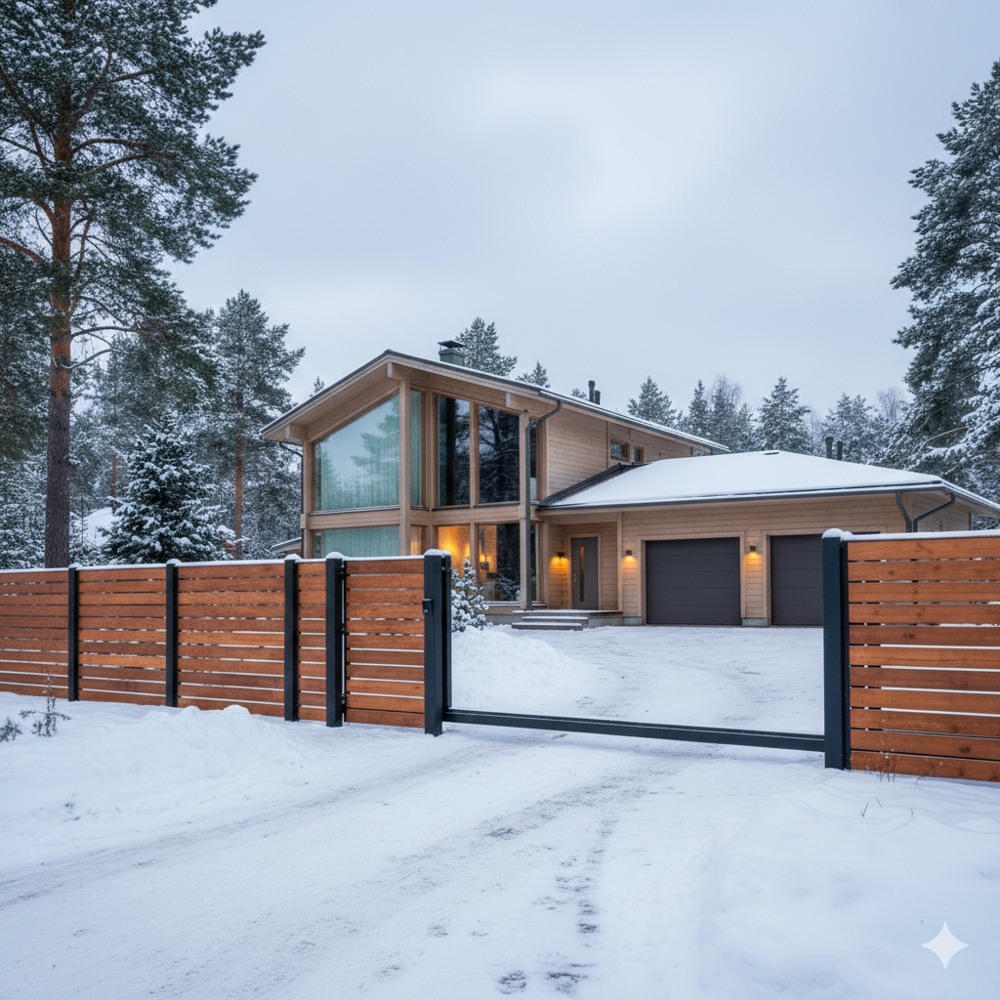
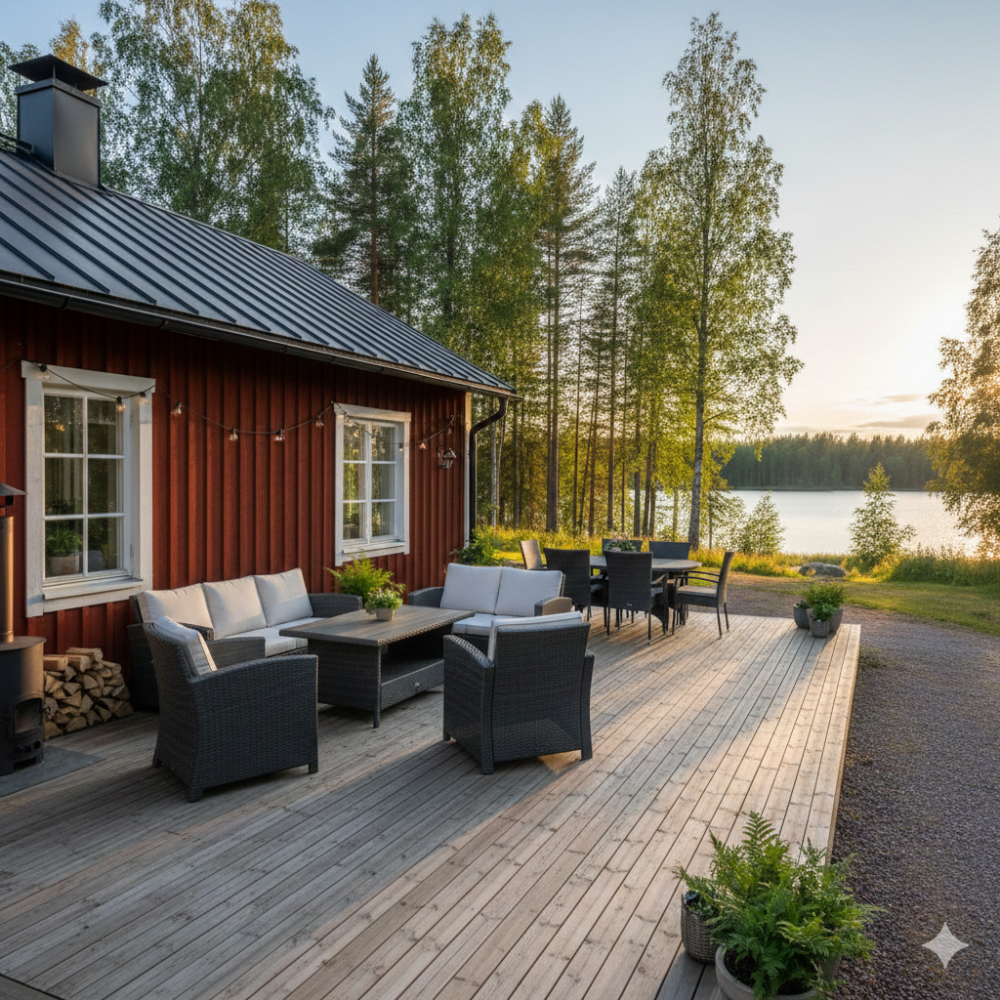

Palvelumme
Toteutamme kaikki ulkotilojen rakentamiseen liittyvät työt – terasseista piharakennuksiin. Palvelemme omakotitaloasujia, mökkiläisiä ja pieniä taloyhtiöitä Joensuussa ja koko Pohjois-Karjalassa.
Terassit
Terassi on yksi parhaimmista investoinneista omakotitalon tai mökin viihtyvyyteen - se muodostaa jatkeen sisätilasta ulkoilmaan ja luo kesän viettopaikan. Suunnittelemme ja rakennamme terassin, joka sopii juuri sinun tonttiisi, talon tyyliin ja käyttötarpeisiin.
Karelia Ulkorakennus rakentaa laadukkaat puuterassit, jotka kestävät Pohjois-Karjalan vuodenaikojen vaatimukset. Terassi voidaan toteuttaa maatasoon, korotettuna tai monitasoisena ratkaisuna omakotitaloihin, kesämökeille ja rivitalokohteisiin.
Pyydä tarjous terassista

Pergolat
Pergola on tyylikäs ratkaisu, joka tuo terassille tai pihalle tunnelmaa ja varjoa. Se sopii erinomaisesti myös pitkien kesäiltojen viettoon.
Toteutamme pergolat mittatilaustyönä puusta tai yhdistelmämateriaaleista. Pergolan voi varustaa esimerkiksi kasvien kasvualustalla, valaistuksella tai aurinkosuojalla toiveidesi mukaan terassin jatkeeksi, piha-alueille ja taloyhtiöiden yhteistiloihin.
Pyydä tarjous pergolastaPiharakennukset
Toimiva piharakennus lisää käytännöllisyyttä ja vapauttaa sisätiloja. Rakennamme varastoja, puuvajoja, vierasmajoja, leikkimökkejä ja muita pieniä ulkorakennuksia.
Jokainen piharakennus suunnitellaan asiakkaan tarpeiden ja tontin ehtojen mukaan. Huolehdimme, että rakennus on kestävä, asiallinen ja sopii olemassa olevan ympäristön ilmeeseen omakotitaloissa, mökeillä ja pienissä taloyhtiöissä.
Kysy lisää piharakennuksista

Aidat
Selkeä aita rajaa tonttisi, lisää turvallisuutta ja viimeistelee piha-alueen ilmeen. Rakennamme aidat puusta, metallista tai näiden yhdistelmistä.
Tarjoamme erilaisia aitavaihtoehtoja tarpeen mukaan – yksinkertaisesta rimaidat edustusaitaan. Aita toteutetaan kestävästi niin, että se kestää Suomen talvet huoletta omakotitalon tontin rajauksessa, taloyhtiöiden piha-alueilla ja mökkikohteissa.
Pyydä tarjous aidastaPiharemontit
Onko vanha terassi lahonnut, aita kallellaan tai piharakennus kaipaava kunnostusta? Hoidamme pienet ja keskisuuret piharemontit nopeasti ja siististi.
Piharemonttimme kattavat esimerkiksi vanhan terassin purkamisen ja uusimisen, aitojen korjauksen tai piharakennuksen kunnostamisen. Arvioimme tilanteen aina ensin paikan päällä, ja toteutamme remontit kaikkiin kiinteistötyyppeihin pienistä korjauksista laajempiin kokonaisuuksiin.
Kysy piharemonttia
Kiinnostiko jokin palvelu?
Ota yhteyttä, niin jutellaan lisää tarpeistasi. Annamme aina ilmaisen tarjouksen ennen töiden aloittamista.
Ota yhteyttä